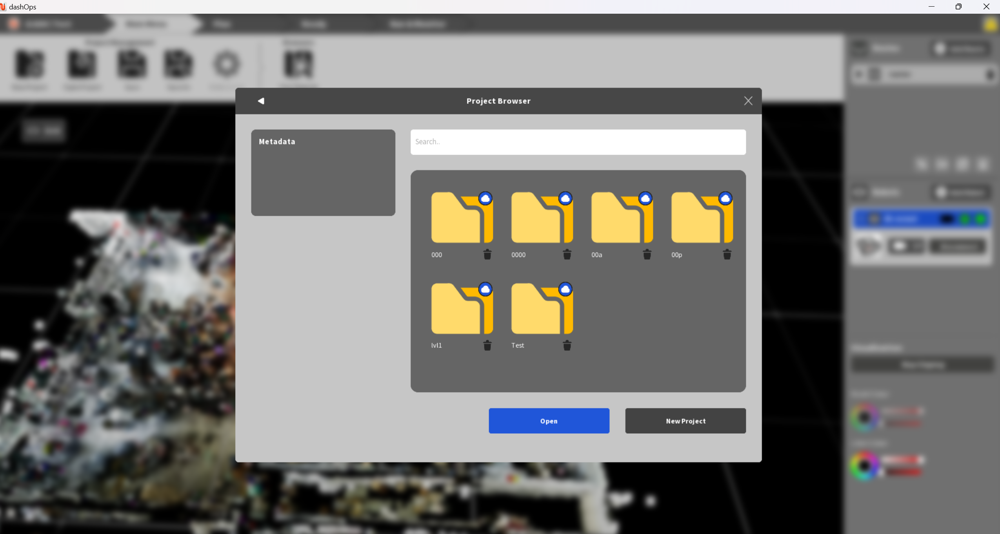
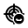

1. d.ASH Ops
d.ASH Ops is the platform for autonomous control of robots. Being seamlessly integrated in the d.ASH Fleet Management workflow, you can enjoy easy planning and deployment of your robots for various use cases. d.ASH Ops allows you to plot waypoints for autonomous navigation on maps, tracking and monitoring path planning, as well as overall monitoring of your robots.
Because d.ASH Ops is fully integrated with d.ASH Fleet Management system, an internet connection is required. Should you require d.ASH Ops without an internet connection, please contact us for more details.
1.1 Minimum System Requirements
- PC with a CPU equivalent to or greater than an Intel(R) Core(TM) i5-10210U
- Nvidia GTX 1060
- 8GB of RAM
- Internet Connection
- Windows 10/11
- Gamepad/Joystick (e.g. Logitech F710 Gamepad)
We recommend using a discrete Nvidia GPU greater than or equivalent to an RTX 3060. Some features may run slower on other GPUs. A joystick is recommended for manual tele-operation control. We also recommend 16GB of RAM for smoother operation
1.2 Tutorial
Control Scheme
d.ASH Ops's control scheme is as follows:
- Tilt/Camera: Hold down the Right Mouse Button and drag
- Zoom: Use the mouse scroll wheel to zoom in/zoom out
- Move Around: Use the WASD keys to pan/move around the world
1.3 Quick Start Guide
The general workflow to operate and run an autonomous waypoint mission is as follows:
| Instructions |
|---|
1 Login to d.ASH Ops with your given credentials.  |
2 Create a new project.  This allows you to save any routes created for use later on. |
3 Load the map of your choice. |
4 Create a new mission route and plot or record the waypoints. |
5 Connect to your desired robot in your robot fleet. |
6 Set the robot's initial starting pose on the 3D map. |
7 Start the robot with the route for your new mission. |
2. Download
Please contact us for the link to download d.ASH Ops.
3. Project Management
Once you've logged in, you will be greeted by the project window. Here, you can manage all existing projects as well as create new projects. These projects are synced to the cloud, thus allowing you to manage your projects and use d.ASH Ops from anywhere in the world!
3.1 Creating a project
To create a new project, simply click on the "New Project" button. You will then be prompted to enter a project name. After creating your new project, you will be redirected to the Map Browser. If a project with the same name exists, a prompt will pop up asking you to choose another name for the project.
3.2 Loading an existing project
To load an existing project, select an existing project saved to the cloud using the file browser on the right hand side of the screen. Alternatively, if you are loading a project saved locally, click on the "Browse" button and navigate to the local location of the project. After creating your new project, you will be redirected to the Map Browser.
3.3 Map Browser
After creating/loading an existing a project, you will be taken to the Map Selection Screen. This screen allows you to select the map which relates to your deployment location. After selecting your map, you can begin to deploy your robots. Maps can be sorted by whether they are coloured or not.
4. Main Menu
This is the main hub of all things d.ASH Ops. Everything concerning deployment of your robots can be found here.
4.1 Top Menu
The top bar contains several crucial pieces of information, such as which part of the deployment process you are currently in and actions that you can perform in each part of deployment. In the Main Menu, options to manage your projects and browse through available maps are available. The arrows indicate the proper flow of how a deployment should be run.
4.1.1 Project Options
 New Project: Create a brand new project
New Project: Create a brand new project Open Project: Load an existing project
Open Project: Load an existing project Save: Save any changes to the current project
Save: Save any changes to the current project Save as: Save any changes to the current project under a different file/project name
Save as: Save any changes to the current project under a different file/project name Preferences: Edit d.ASH Ops settings
Preferences: Edit d.ASH Ops settings
4.1.2 Map Browser
 Map Browser: Browse through all maps saved to your account
Map Browser: Browse through all maps saved to your account
4.2 View Port
This is a visual representation of the map you have loaded for your project.
- View Toggles: A widget in the top left corner of the View Port which allows you to toggle the visiblity of certain objects in the View Port.
- Height Sliders: Adjust the cut off points for rendering of the loaded map.
4.3 Side Bar
The Side Bar contains all information to do with any planned routes, connected robots and View Port visualisation tweaks
- Routes: Contains all planned routes in the project with the ability to toggle the preview of the route in the View Port, view all robots assigned to this route, assign new robots to this route and delete existing routes. This also reflects the current mission's route and status.
- Robot List: Shows you all currently connected robots and their status.
- Visualisation: Allows for you to tweak the colour of elements in the rendered point cloud as well as the scale (size) of the rendered robot and waypoints. This is more useful for those who experience colour blindness. We recommend leaving these settings at their default value.
5. Plan Tab
This tab contains all actions to do with planning routes.
5.1 Actions
Three actions are available for you to use:
 Autodrive: Using machine learning and computer vision to analyze and understand your robot's surroundings, hands-free Level 2 Autonomy allows for the navigation of complex, unstructured environments using just cameras alone.
Autodrive: Using machine learning and computer vision to analyze and understand your robot's surroundings, hands-free Level 2 Autonomy allows for the navigation of complex, unstructured environments using just cameras alone.-  Record Waypoints: Records and plots waypoints as you manually navigate the robot in real life.
 Create Route: Creates an empty route for you to edit and add waypoints later on.
Create Route: Creates an empty route for you to edit and add waypoints later on.
5.2 Edit Waypoint
This menu contains all available actions for editing waypoints on a route. This is greyed out by default and will only be accessible after selecting a route to edit. Several options are available to you.
 /
/  Add/Delete Waypoint: Add or remove a waypoint from a selected route
Add/Delete Waypoint: Add or remove a waypoint from a selected route Reposition Waypoint: Select a waypoint to shift the waypoint from one position to another.
Reposition Waypoint: Select a waypoint to shift the waypoint from one position to another. - Interpolation by distance: Adds additional waypoints between two existing waypoints which are too far apart. This allows for more actions (such as scans) to be excuted along a given path. The default interval is set at 1m.
 / Enable/Disable Scan: Marking a waypoint as a scan point will tell the robot to stop and perform a scan with 3rd party scanners.
/ Enable/Disable Scan: Marking a waypoint as a scan point will tell the robot to stop and perform a scan with 3rd party scanners. Scan All: Marks all waypoint as a scan point. This will tell the robot to stop and perform a scan with 3rd party scanners.
Scan All: Marks all waypoint as a scan point. This will tell the robot to stop and perform a scan with 3rd party scanners. Finish: Closes the menu.
Finish: Closes the menu.
5.3 Recording Waypoint
| Instructions |
|---|
1 Click 'Record Route' and name your route. |
2 Select the robot which you want to record the route with. |
3 Set an appropriate interval between recorded waypoints. |
4 Click 'Start' to start recording the route. |
5 Through manual teleoperation, drive your robot along the route you want to be recorded. |
6 When you are finished recording, click 'End'. |
5.4 Robot List
Clicking this button will show a popup containing a list of all available robots. Connect to your preferred robot from this popup menu.
6. Ready Tab
This tab contains all actions necessary to deploy your robot
6.1 E-Stop/Resume
Controls for stopping and resuming a mission/robot movement can be found here.
6.2 List of Robots
Shows a list of all connected robots with several different pieces of information tied to each robot. - Health Monitor: The health monitor shows the status of all sensors on the robot. - Robot Info: Contains info such as the robot's serial number, date of purchase etc - Robot Settings: Adjust the tag settings of a selected robot through colour tags.
6.3 Robot Actions
 Localise: Give the robot an estimate of where it currently is on the map in order for the robot to fine tune its position.
Localise: Give the robot an estimate of where it currently is on the map in order for the robot to fine tune its position.- Follow Cam: Sets the camera of the View Port to follow and track the robot as it moves throughout the map.
 /
/  Auto/Manual Control: Manually change the operating mode of the selected robot.
Auto/Manual Control: Manually change the operating mode of the selected robot.- Sit/Stand Robot: SPOT ONLY. Sit or stand Boston Dynamics Spot Robot.
 Dock: Dock or undock robot at docking station.
Dock: Dock or undock robot at docking station.
6.3.1 Localisation
Before running a mission, you should make sure that your robot is localised to ensure that it follows the route accurately.
| Instructions |
|---|
1 Select the robot that you want to localise and click 'Localise'. |
2 Select the robot which you want to record the route with. |
3 Set an appropriate interval between recorded waypoints. |
4 Click 'Start' to start recording the route. |
5 Through manual teleoperation, drive your robot along the route you want to be recorded. |
6 When you are finished recording, click 'End'. |
6.4 Assign Route to Robot
- Drop Down: Choose the route to assign.
- Tag Robot: Choose the robot to assign the route to (i.e: tagging the robot)
7. Monitor Tab
This tab contains all actions and information about the mission in progress.
7.1 E-Stop/Resume
Controls for stopping and resuming a mission/robot movement can be found here.
-  Stop All: Stops all robots in case of an emergency.
-
Stop All: Stops all robots in case of an emergency.
-  Resume All: Resumes all robots that are stopped.
Resume All: Resumes all robots that are stopped.
7.2 Live views
Views from the cameras on the robots can be found here. To add a view, simply drag and drop a robot from the right side bar into an empty view slot and select which camera to view. There are three templates to follow.
 Map View: Shows less of the view from the robot cameras to make space for viewing the Point Cloud Map.
Map View: Shows less of the view from the robot cameras to make space for viewing the Point Cloud Map.- Four View: This view will completely hide the Point Cloud Map and instead show four slots for different robot camera views.
 Focus: This view will completely hide the Point Cloud Map and instead show only one robot camera view.
Focus: This view will completely hide the Point Cloud Map and instead show only one robot camera view.- Hide: Disables all cameras/shows only the Point Cloud Map
7.3 Robot Controls
 Run Route: Issues the command to the selected robot to run its assigned route
Run Route: Issues the command to the selected robot to run its assigned route- Autodrive: See above
- / *Auto/Manual
- Sit/Stand: See above
8. Telegram Configuration
d.ASH Ops supports status notifications of the robots in your fleet via Telegram! Add dconstruct-bot!
8.1 Setup
- Add the Telegram bot to the Telegram chat of your choice
- Request for a key from us here.
- In the Telegram chat of your choice, use the
/registercommand followed by the key. (e.g./register [insert key here])
8.2 Remove from chat
If you would like to stop receiving notifications, use the /delete command.